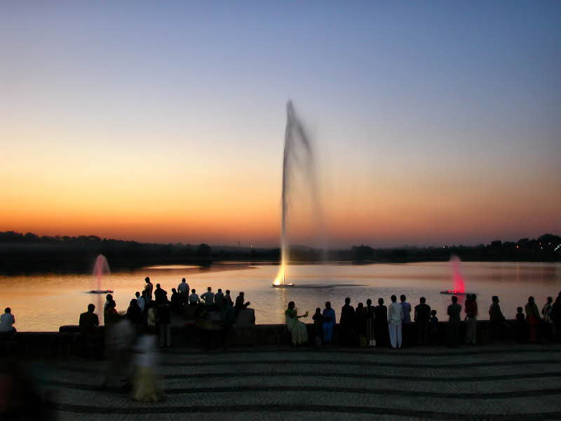
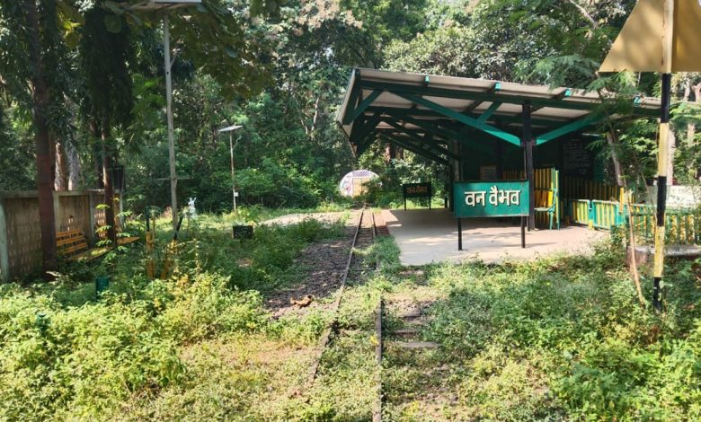
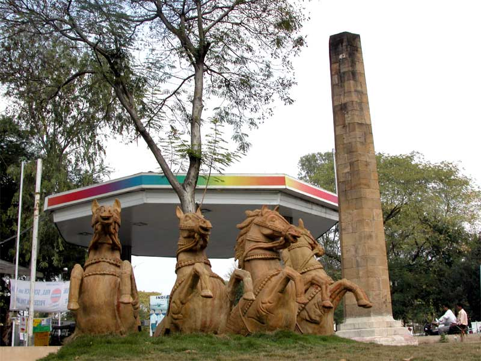
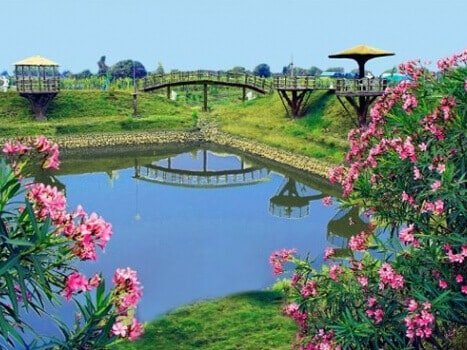

Deekshabhoomi
A significant Buddhist monument and an important cultural landmark of Nagpur.
Heritage & CultureDISCOVER NAGPUR
Explore some popular attractions and beautiful destinations in and around Nagpur.
A significant Buddhist monument and an important cultural landmark of Nagpur.
Heritage & Culture
A popular lakeside destination known for its relaxing atmosphere and beautiful evening views.
Nature & Relaxation
A green and peaceful area offering pleasant views, walking trails and natural surroundings.
Nature & Photography
A famous historical marker associated with the geographical centre of India.
History
One of Nagpur's well-known lakes, surrounded by greenery and recreational spaces.
Lake & Recreation
A peaceful garden offering a calm environment away from the busy city life.
Garden & Nature